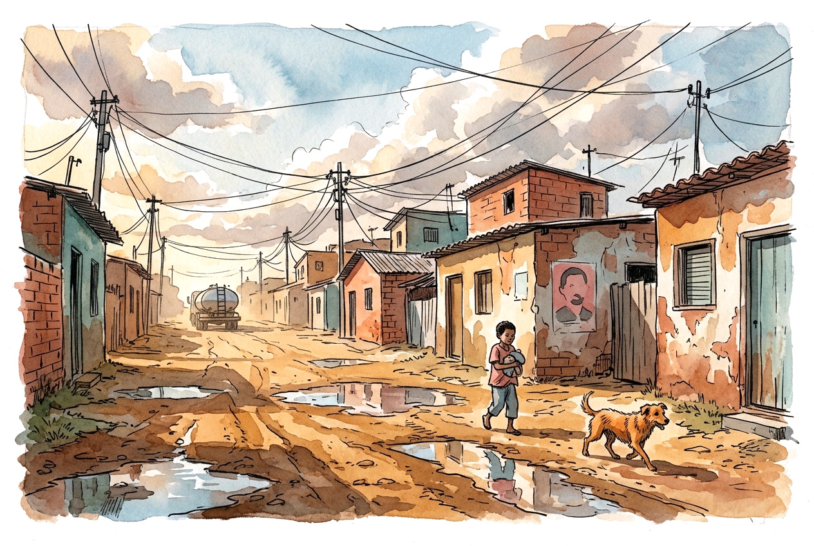
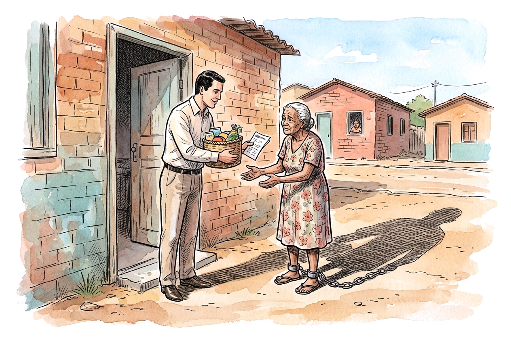
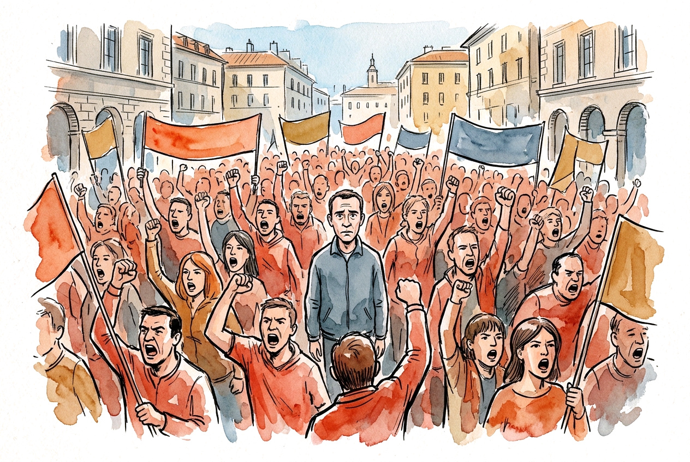
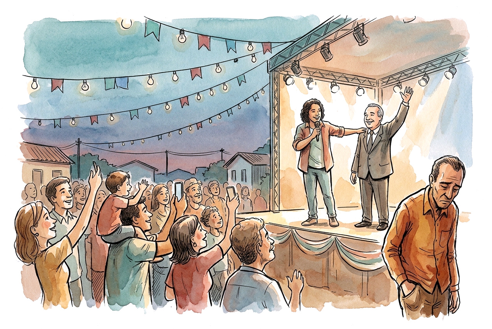
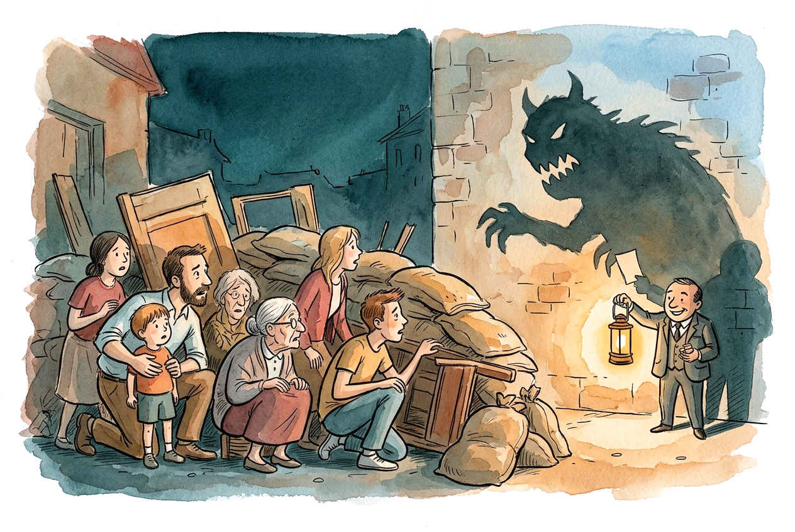
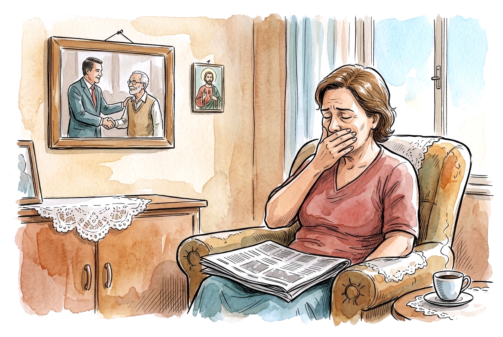
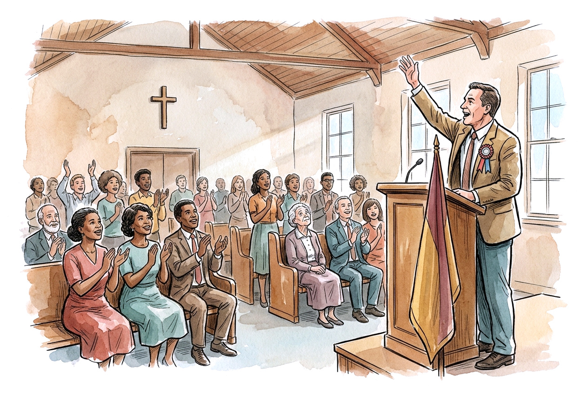
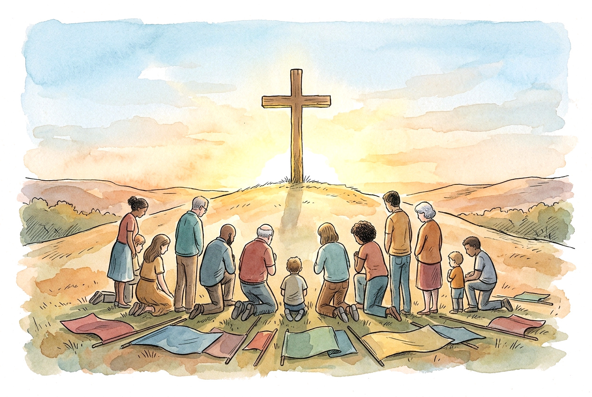
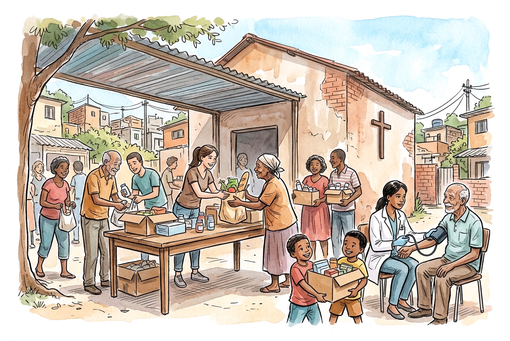

Uma só bandeira: Cristo e mais ninguém
22 de outubro de 2026 · Sociedade · 14 min de leitura · Luis Augusto Matos PontesEm muitos bairros pobres do interior do Brasil a cena se repete. A rua é de terra e vira lama quando chove, o esgoto corre a céu aberto, o posto de saúde está sem médico faz meses e a escola tem o telhado remendado. Na parede de várias casas há um adesivo com o sobrenome de uma família que manda na política da cidade desde o tempo dos avós.
Quem olha de fora costuma concluir que o povo é ignorante, e eu acho que essa conclusão é preguiçosa. Se você mora num lugar assim, saber de quem depende o remédio, a vaga na creche e o emprego do filho é conhecimento prático, que a necessidade ensina cedo. Votar contra quem controla essas coisas tem um preço, e a pessoa sabe qual é.
Escrevo isso para tratar de outra coisa, que não se limita à periferia nem a um partido. Em qualquer classe social, à esquerda ou à direita, as pessoas entregam a um político, a um grupo ou a uma causa a lealdade que só pertence a Deus. Os cristãos fazem isso também, e com a consciência tranquila, porque costumam usar o nome de Jesus enquanto fazem.
Minha posição é simples. O cristão tem uma identidade só, que é Cristo. Vivemos por ele e morremos por ele, e a bandeira que erguemos é a dele. Nenhum homem, partido ou movimento tem direito ao que Cristo comprou com o próprio sangue.
O favor que vira dívida

Começo pelo estômago, porque a Bíblia nunca tratou a fome como assunto menor.
Onde o serviço público funciona mal, o direito acaba chegando como favor. Uma consulta, uma cirurgia, uma vaga temporária na prefeitura, a cesta básica do fim do mês. No papel é direito de todos, mas na prática costuma vir pela mão de alguém que tem nome e telefone. Imagine uma senhora que espera oito meses por um exame. Um parente conhece uma pessoa ligada ao vereador, e o exame sai em uma semana. Ninguém pediu voto e ninguém precisou pedir, porque ela já sabe a quem deve.
Daí sai um efeito feio. Quanto mais precário o atendimento que deveria valer para todo mundo, mais o favor pessoal vale. E quem distribui o favor ganha com a precariedade, de modo que não tem pressa em resolver o problema que lhe dá poder. Não precisa haver conspiração nenhuma. A situação se mantém sozinha, porque cada um faz o que lhe convém.
Quem passa necessidade pensa no que está perto. Qualquer um de nós faria igual. Jesus ensinou a pedir o pão de hoje, e quem não sabe se vai ter o remédio na semana que vem não consegue se animar com a promessa de uma escola melhor daqui a quatro anos. O candidato que entrega o remédio ganha a conversa. Quem recebeu fez a conta que a situação permitia.
A Bíblia conhece esse laço. "O suborno cega os que veem e perverte as palavras dos justos" (Êxodo 23.8). O texto fala do juiz, mas serve também para o povo, que depois de muito tempo sendo comprado aos poucos perde o costume de esperar outra coisa.
Israel também procurou socorro no lugar errado. Quando o aperto vinha, corria para o Egito atrás de cavalos e carros de guerra, e Isaías responde com um lamento: "Ai dos que descem ao Egito em busca de socorro, e confiam em cavalos" (Isaías 31.1). O Egito de cada época dá o pão e cobra fidelidade em troca. O Salmo 146 diz o mesmo em poucas palavras: "Não confieis em príncipes, nem em filho de homem, em quem não há salvação".
Quem explora a necessidade dos outros vai responder por isso a Deus. A igreja, porém, também tem uma pergunta para responder. Se a comunidade que deveria estar ali, alimentando, visitando e cuidando, não estava, o político que chegou primeiro ocupou um espaço que ficou vago.
Como a multidão pensa

Existe outra força, que não depende de dinheiro e age em qualquer faixa de renda: a pressão do grupo sobre quem está nele.
Sozinha, a pessoa pondera. No meio da multidão pondera menos. O anonimato tira a vergonha, a emoção dos que estão ao lado contamina, um grito vira coro em segundos e ninguém sabe mais quem começou. Quem discorda costuma baixar a voz, porque ficar isolado é muito desconfortável. O grupo dispensa argumentos. Precisa de slogans, de símbolos e de alguém para odiar.
A Escritura traz dois exemplos disso que valem mais do que qualquer teoria.
O primeiro é Jerusalém. Quando Jesus entra na cidade, o povo estende mantos no chão e grita "Hosana ao Filho de Davi!" (Mateus 21.9). Poucos dias depois, uma multidão pede a crucificação dele (Mateus 27.22). Muita gente deve ter estado nos dois lugares. O que mudou nesse intervalo foi o ambiente, e Mateus registra quem o mudou: "os principais sacerdotes e os anciãos persuadiram as multidões a que pedissem Barrabás" (Mateus 27.20). Quem tinha cantado hosana não quis ser o único calado.
O segundo é o tumulto de Éfeso, em Atos 19. A cidade se agita contra Paulo, o povo se reúne no teatro e passa quase duas horas gritando "Grande é a Diana dos efésios!". Lucas anota com ironia que "a maior parte nem sabia por que estavam reunidos" (Atos 19.32). Basta ter visto uma briga de torcida ou uma discussão acalorada na internet para reconhecer a situação.
Por isso a lei de Moisés inclui uma ordem que quase ninguém cita: "Não seguirás a multidão para fazeres o mal" (Êxodo 23.2). Deus sabia que o mal costuma andar em grupo e vem com aparência de coisa boa.
O bezerro de ouro mostra o resto. Moisés demora a descer do monte, o povo se inquieta e pede um deus que possa ver. Arão faz a imagem, e no dia seguinte todos se levantam cedo para oferecer sacrifícios e festejar (Êxodo 32). Ninguém ali se considerava ateu. Chamaram aquilo de "festa ao Senhor". A idolatria de quem frequenta o culto geralmente é assim, usa o nome de Deus.
O artista no palanque e o crachá de gente boa

A multidão precisa de rostos conhecidos, e a política arranja. No aniversário da cidade, vem um cantor famoso, pago em parte com dinheiro público, e em certo momento do show agradece ao prefeito com a voz embargada. Quem ouve aquele cantor há vinte anos sente que ele é um amigo, e então se ele confia no prefeito, a gente também confia. Ninguém foi olhar o orçamento, mas todo mundo sentiu o carinho.
O mesmo vale para jogador, humorista, influenciador e, infelizmente, para pastor. Quem tem a atenção do povo tem muito poder, e nem sempre percebe quanto.
Se aparece uma acusação de corrupção, o efeito fica evidente. O dinheiro que desapareceu, e que significava remédio e merenda, deixa de ser tratado como roubo e passa a ser descrito como perseguição. Fala-se em ataque do povo, da elite, da nossa cultura. Mudam as palavras e muda o julgamento moral. O desvio sai do centro da conversa, e o que importa passa a ser de que lado você está.
Junto vem um terceiro fator, mais delicado. O voto vira atestado de caráter. Quem vota em um candidato é solidário e tem coração, quem vota em outro é frio e não liga para os pobres. O eleitor recebe de graça o crachá de pessoa boa, e dificilmente o devolve. Para quem tem pouco dinheiro, pouco estudo e nenhum cargo, ser reconhecido como alguém de bem é um dos poucos reconhecimentos ao alcance, e abrir mão dele dói.
Com isso, criticar uma gestão passa a soar como ofensa pessoal, e perguntar sobre o dinheiro, como acusação de má-fé. Quem duvida perde lugar no grupo, a simpatia da vizinhança e às vezes a mesa da família. Ficar quieto sai mais barato.
Paulo viu algo parecido em Corinto. Uns diziam "Eu sou de Paulo", outros "eu, de Apolo", outros "eu, de Cefas", e havia os que diziam "eu, de Cristo", só que como se fosse mais um time. A resposta dele foi: "Acaso Cristo está dividido? Foi Paulo crucificado por vós?" (1 Coríntios 1.12-13). Mais adiante ele chama aquilo de comportamento humano comum (1 Coríntios 3.4). Se um apóstolo recusou ser bandeira de alguém, não faz sentido nenhum um vereador, um deputado ou um influenciador evangélico aceitarem esse papel.
O medo do outro lado

O crachá se segura melhor quando há um vilão do outro lado. Um grupo se une com mais força contra alguma coisa do que a favor de alguma coisa.
A propaganda sabe disso. O adversário deixa de ser um homem com ideias diferentes e vira uma ameaça de destruição: se ele vencer, as igrejas fecham, os benefícios acabam, a família se desfaz, o país vai para o buraco. Cada lado tem o seu monstro, e conta a história com a mesma convicção.
Cercado por esse medo, o eleitor começa a aceitar o que antes recusaria. Nepotismo, obra superfaturada e dinheiro desviado ficam pequenos perto da catástrofe que o outro lado representaria. Existe até o ditado brasileiro, "rouba, mas faz", que quer dizer que tudo bem roubar, contanto que ele me defenda.
O medo muitas vezes tem fundamento. Quem sustenta a casa com um benefício social tem motivo para temer quem prometa cortá-lo. É um pai de família com receio de perder o que tem. O problema começa quando outras pessoas alimentam esse receio de propósito, porque lucram com ele.
A Bíblia tem avisos para esse estado de espírito. "O temor do homem arma ciladas" (Provérbios 29.25). "A ira do homem não produz a justiça de Deus" (Tiago 1.20). E para quem troca os nomes das coisas conforme lhe convém: "Ai dos que ao mal chamam bem e ao bem, mal" (Isaías 5.20). Paulo ainda lembra que "a nossa luta não é contra o sangue e a carne" (Efésios 6.12), o que significa que o vizinho que vota diferente de mim não é o inimigo. Se for crente, é meu irmão. Se não for, é alguém por quem Cristo também morreu.
Quando a prova aparece

Tudo isso mantém a lealdade enquanto as coisas estão tranquilas. O teste vem quando surge a prova: uma operação da polícia, uma gravação, uma planilha mostrando que o dinheiro da saúde foi parar em outro lugar.
Seria natural ficar indignado, mas na maioria das vezes a reação é a negação. Duvida-se do fato, o jornalista vira inimigo, quem denunciou é chamado de perseguidor, o processo é tratado como armação, e o acusado passa a ser visto como mártir.
Costuma-se dizer que essa gente é mal informada. Em muitos casos não é, porque ela viu a notícia, entendeu o que dizia e decidiu que não podia ser verdade. Quando uma crença que a gente ama bate de frente com um fato desagradável, a mente sofre um desconforto real. Para se livrar dele há duas saídas: mudar de crença, que dói, ou desacreditar a informação, que alivia. A segunda é muito mais fácil.
Dá para entender a força dessa resistência olhando o que está em jogo. Em muitas famílias o voto passa de geração em geração. O avô votava naquele sobrenome, o pai viveu sob aquela história, o filho aprendeu a respeitar o nome da família na mesa do almoço. A foto do político cumprimentando o avô fica na sala, perto da imagem do santo. O homem virou quase um parente.
Reconhecer que ele enganou o povo obriga a admitir que o voto do avô foi usado, o do pai também, e que cada fila enfrentada e cada briga em defesa do nome serviu a alguém que enxergava aquela família como patrimônio. Isso machuca mais do que a manchete. A pessoa, no fundo, está defendendo o avô, o pai e a imagem que faz de si mesma.
Quem tem outra âncora lida melhor com isso. O cristão que sabe a quem pertence consegue dizer que errou, que foi enganado e que confiou em quem não devia, porque o valor dele não depende de ter apostado no candidato certo. "É melhor confiar no Senhor do que confiar no homem", diz o Salmo 118.8. E Jesus prometeu: "Conhecereis a verdade, e a verdade vos libertará" (João 8.32). Isso inclui ser liberto da vergonha de mudar de opinião.
Já quem pôs a segurança toda num ídolo precisa defendê-lo até o fim, porque se ele cair, cai junto quem o carrega.
A igreja também faz isso

Seria cômodo encerrar apontando o dedo para os políticos e para o povo da periferia. Mas boa parte do que descrevi acontece dentro das nossas igrejas.
Nós temos nossos crachás. Temos nossos monstros do outro lado. Temos pastores e cantores gospel que emprestam o prestígio do púlpito a candidatos, e fiéis que seguem sem questionar. Tem cristão de direita convencido de que a fé cabe numa bandeira nacional, e cristão de esquerda convencido de que cabe numa causa social. Os dois falam de Jesus, mas muitas vezes falam mais do partido.
Jeremias descreveu esse tipo de líder: "Curam superficialmente a ferida do meu povo, dizendo: Paz, paz; quando não há paz" (Jeremias 6.14). Hoje a receita é parecida. Trata-se a ferida do crente com um inimigo em comum e a promessa de vitória na urna, e a ferida de verdade, o pecado, continua sem tratamento.
Também não estou dizendo que o cristão deve se afastar da política. Jesus mandou dar a César o que é de César (Mateus 22.21). Paulo recomendou orar pelos reis e por todos os que estão em autoridade (1 Timóteo 2.1-2) e respeitar os governos (Romanos 13). Votar é parte da cidadania e deve ser feito com informação, consciência e oração. Mas o voto é uma ferramenta e não uma profissão de fé. Escolher o menos ruim entre dois homens falhos não transforma ninguém em discípulo de nenhum dos dois. Quando um candidato pede o que só Deus pode pedir, como adoração, obediência cega ou silêncio diante do erro, a resposta é a de Pedro: "Antes importa obedecer a Deus do que aos homens" (Atos 5.29).
Vale cada um se perguntar: se amanhã descobrissem que o meu candidato fraudou alguma coisa, eu teria coragem de admitir? Se a resposta for não, ele já deixou de ser candidato e virou ídolo.
Só Cristo é digno

Tudo isso nasce de uma necessidade que o ser humano tem de pertencer a algo maior que ele e de ter por quem lutar. Deus colocou essa necessidade em nós. O erro está em entregá-la a quem não aguenta o peso.
Quando Paulo escreve "já estou crucificado com Cristo; e vivo, não mais eu, mas Cristo vive em mim" (Gálatas 2.20), ele descreve uma troca completa de identidade. O velho eu, com as tribos, os sobrenomes e as lealdades de antes, morreu na cruz. Raça, partido, região, classe e time passam para segundo plano. Posso amar minha terra e votar com seriedade, mas nada disso responde à pergunta sobre quem eu sou.
"Para mim o viver é Cristo, e o morrer é ganho" (Filipenses 1.21). Dar a vida por um político é loucura. Quase toda causa terrena cobra mais do que paga, e só Cristo tem direito sobre a vida e a morte do crente. "Se vivemos, para o Senhor vivemos; se morremos, para o Senhor morremos. Quer vivamos, quer morramos, somos do Senhor" (Romanos 14.8).
Por que só ele? Em Apocalipse 5 ninguém no céu nem na terra é achado digno de abrir o livro, até que aparece o Cordeiro e o coro canta: "Digno és". Ele é digno porque foi morto e comprou para Deus, com o seu sangue, gente de toda tribo, língua, povo e nação. Nenhum presidente morreu por nós, nenhum partido nos resgatou, nenhum pastor famoso carregou o nosso pecado. Essa palavra, digno, pertence a um só.
O cristão tem bandeira, sim. O salmista diz a Deus: "Deste um estandarte aos que te temem, para que o desfraldem por causa da verdade" (Salmo 60.4). E o cristão tem luta, sim. Paulo diz a Timóteo: "Participa dos meus sofrimentos como bom soldado de Cristo Jesus. Nenhum soldado em serviço se envolve em negócios desta vida, porque o seu objetivo é satisfazer àquele que o arregimentou" (2 Timóteo 2.3-4). As armas dele não são carnais (2 Coríntios 10.4), e a cidade a que pertence fica em outro lugar: "a nossa pátria está nos céus" (Filipenses 3.20).
Disso decorre uma liberdade que mais ninguém tem. O crente não precisa do favor do poderoso, porque o pão dele vem do Pai. Não precisa da aprovação do grupo, porque o nome dele está escrito no céu. Não precisa temer o adversário, porque quem reina é o Senhor. E não precisa defender o indefensável, porque seu valor não depende de ter escolhido o lado certo.
O que fazer com isso

Em primeiro lugar, a igreja pode ser o lugar onde o necessitado encontra ajuda sem que ninguém peça nada em troca. Quando o remédio, a cesta, a visita e a companhia vêm da comunidade, sem padrinho e sem pedir voto, o favor com sobrenome perde força. Tiago diz que a religião pura é visitar os órfãos e as viúvas em suas aflições (Tiago 1.27). Quem faz isso desmonta a dependência sem precisar de discurso.
Cada um também pode olhar para a própria bandeira. Pergunte-se de quem você mais fala no dia a dia, de Cristo ou do seu candidato, e se consegue amar o irmão que vota diferente de você.
Também convém não transformar o outro lado em monstro. Paulo escreveu: "Se possível, quanto depender de vós, tende paz com todos os homens" (Romanos 12.18). Isso não é covardia. Quer dizer lembrar que o adversário político tem alma.
Dentro da comunidade, é preciso deixar espaço para a dúvida e para a pergunta incômoda. Uma igreja onde discordar custa o lugar no banco já virou clube político, e a verdade não tem medo de pergunta.
E na hora de votar, que se vote com consciência, informação e oração, e que se ore pelo eleito, seja ele aquele em quem você votou ou não. Se ele errar, que seja criticado, e se acertar, que seja reconhecido.
Voltemos ao bairro do começo, com a rua de terra, o posto sem médico e o adesivo na parede. A justiça importa, e um governo melhor faria diferença ali. Mas a resposta cristã mais profunda é um povo que sabe a quem pertence e consegue olhar para o adesivo sem medo, porque o nome que o sustenta não está colado na parede de ninguém. Está cravado numa cruz.
Que a nossa única bandeira seja essa, pela qual vivemos e, se for preciso, morremos.